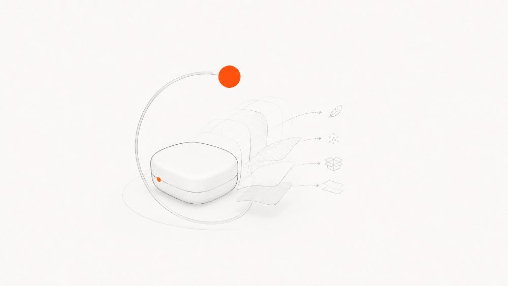
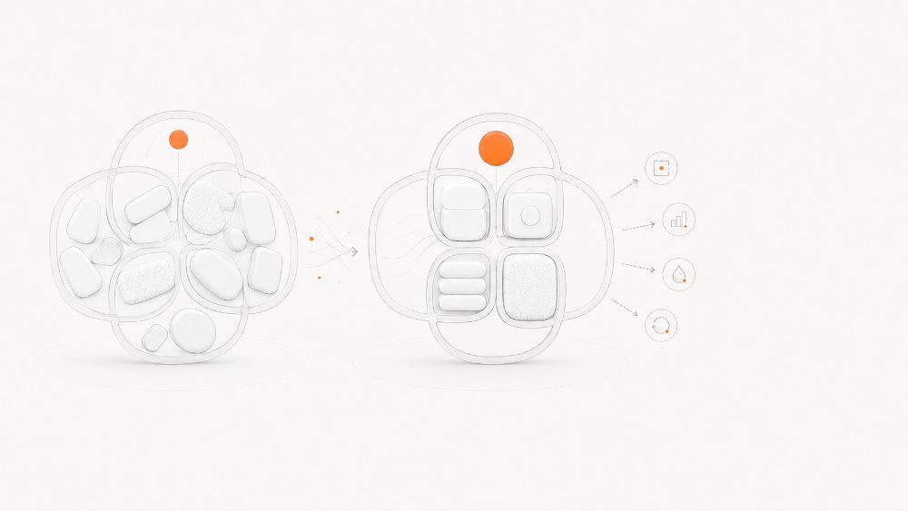
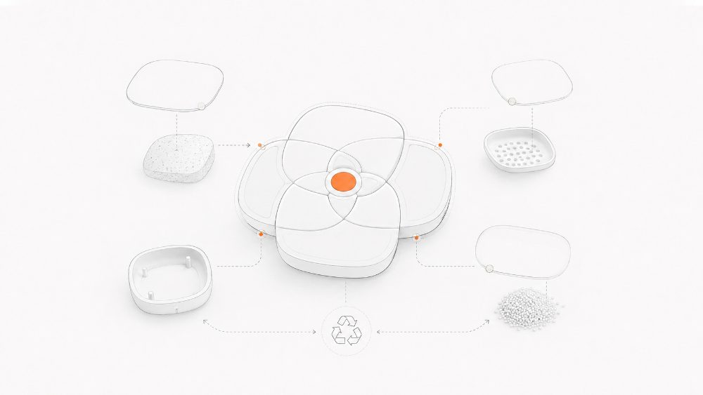
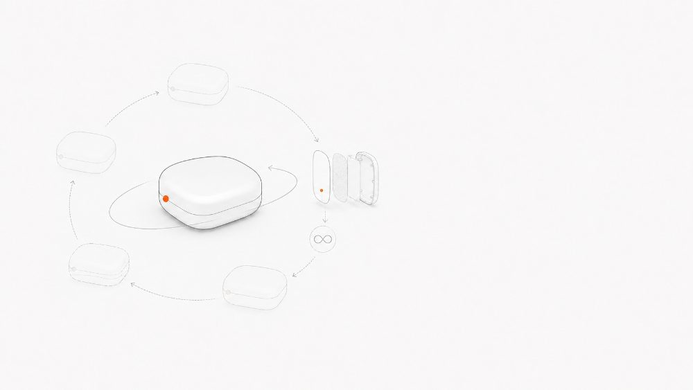
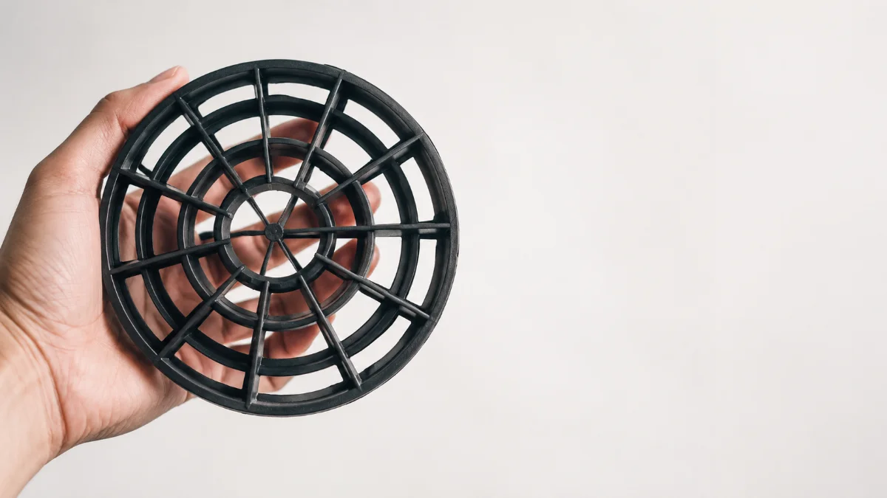

Repensamosdesde el origen.
Diseñamos productos y envases que nacen del residuo, con materiales trazables e impacto medible.

Reducimos el peso de los productos mediante mejoras técnicas en los materiales o eliminando elementos del envase.

Rediseñamos los productos para aumentar su capacidad, rendir más su contenido y mejorar los procesos involucrados.

Incorporamos material reciclado en nuevos productos, con piezas fácilmente separables y compatibles para el reciclado.

Sustituimos productos de un solo uso por reutilizables y mejoramos sus características para alargar su vida útil.
Grido
El primer envase recargable de helados del mundo. Menos telgopor, mejor experiencia y logística para una cadena internacional.
2024 · Reducir · Rediseñar Ver proyecto →Re-vasos
Vasos 100% reutilizables, elaborados con materia prima reciclada y trazable. Monomaterial, reciclables e impresos con tintas al agua.
2022 · Reutilizar Ver proyecto →
BIO 4
Una matriz desulfurizadora para bioetanol, con proveedores locales y material reciclado. Economía circular en desarrollo continuo.
2020 · Repensar Ver proyecto →7 proyectos.Un mismo propósito.
Cafezazo, Cosquín Rock, Seguridad vial, Abre Baldes y lo que viene.
Ver todos los proyectos →Hoy, tenemos una elección.
Reducir. Rediseñar. Repensar. Reutilizar.
Cuatro principios, una misión.
Inspirarnos con otros para re-evolucionar el plástico y convertirlo en una oportunidad para el planeta.
Cómo trabajamos.
Un proceso circular: cada paso conecta con el siguiente para convertir el residuo en un nuevo recurso.
Ecodiseño de envases y productos
Repensamos el producto desde su origen: menos material, más vida útil y pensado para volver a empezar.
Investigación y desarrollo
De la idea a una solución viable: investigamos materiales, validamos hipótesis y desarrollamos el diseño.
Matricería y prototipado
Materializamos el diseño con precisión: matrices, moldes y prototipos funcionales listos para producir.
Producción con material reciclado
Producimos con materia prima reciclada, trazable y local. Tintas al agua y monomaterial para reciclar otra vez.
Consultoría en economía circular
Acompañamos a marcas y eventos a cerrar el ciclo: de residuos a recursos, con impacto medible.
El equipo.
Tocá un integrante para conocer más · diseño, materiales y comunicación para la economía circular.


Sumate a la evolucióndel plástico.
Novedades de ecodiseño, economía circular y nuevos proyectos. Sin spam, solo lo que importa.
Al suscribirte aceptás nuestra política de privacidad.